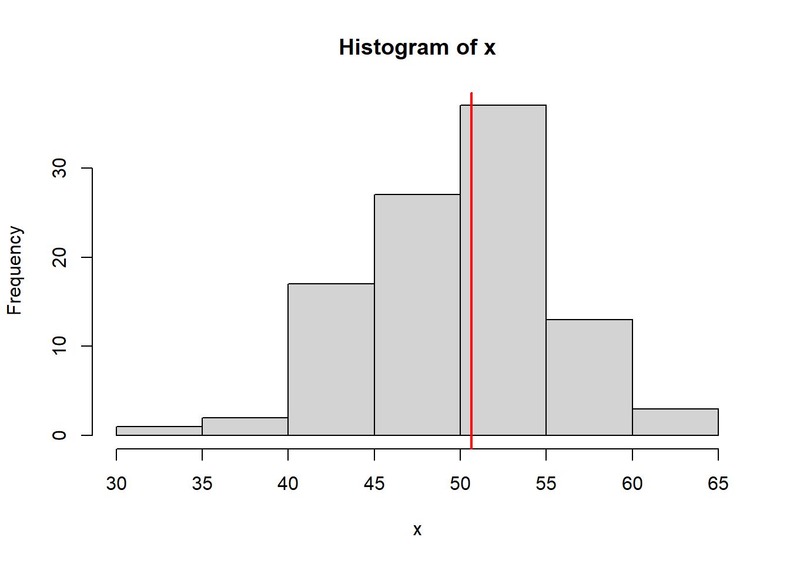
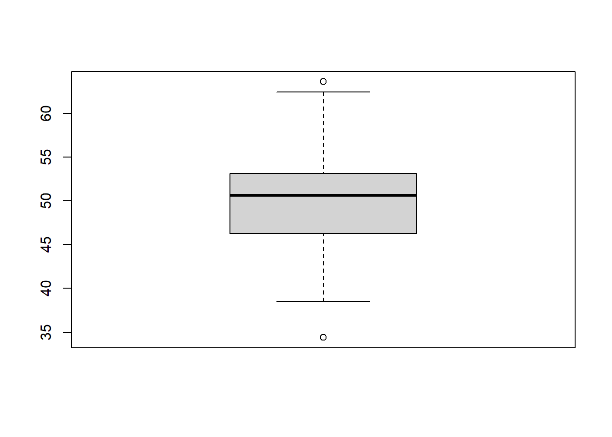
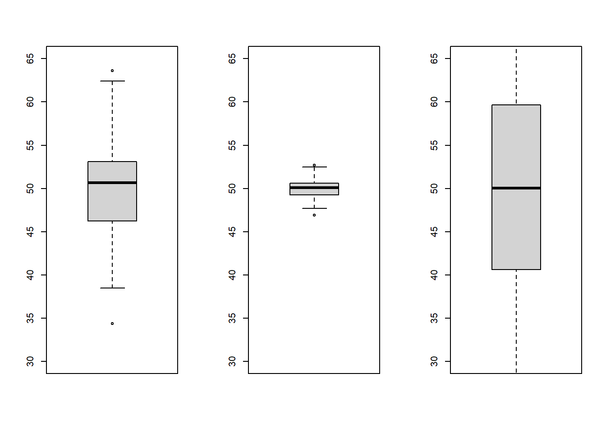

1 Tema 1: Estadística Descriptiva
1.1 Definición de la estadística.
El arte de contar una historia con datos
- La información, los datos, son la fuente primaria para la estadística.
- La estadística cubre los métodos, técnicas detrás de:
- Recolección de información
- Procesar la información (limpieza, depuración, coherencia, etc.)
- Análisis de la información
- Visualización de la información
- Es una ciencia transversal
La estadística es la gramática de las ciencia
La ciencia de datos en el nombre sexy de la estadística
1.2 Historia
- Censo. En la antigüedad se listaba de forma completa una determinada población, con el fin de conocer sus características. (Estadística descriptiva)
- Censos de población y vivienda (2012, 2001, 1992, 1976, etc.)
- Censos de Agropecuario (2013, 1984)
- Censos económicos, unidades económicas de un país o región.
- Muestra e inferencia. El objetivo de esta fase es explicar lo que le sucede a una población a partir de una muestra de ella. (Probabilidad, variables aleatorias).
- Explosión de conocimiento. Nace a partir de la aparición del ordenador. Minería de datos, minería de texto, machine learning, ciencia de datos, big data, etc.
1.3 Conceptos importantes
1.3.1 Población
Una colección de objetos/elementos, por ejemplo; personas, cosas, animales, etc.
Sea la población o universo de estudio identificado como \(U\). Debemos distinguir entre las poblaciones finitas y poblaciones infinitas, en este capítulo se trabaja sobre universos finitos.
\[U=\{u_1, u_2, \ldots ,u_i,\ldots, u_N \}\]
Vamos a utilizar la letra \(N\) para referirnos al tamaño del universo.
1.3.2 Muestra
Es un sub conjunto del universo, lo vamos a denotar con \(s\). \(s \subset U\).
\[s=\{u_{(1)}, u_{(2)}, \ldots, u_{(n)} \}\]
Donde \(u_{(i)} \in U\).
Nota: El tamaño del universo o la población sera denotado por \(N\), y \(n\) al tamaño de la muestra.
1.3.3 Variable
Una variable en estadística expresa una característica asociado a algún elemento en la población. Normalmente esta se la denota con \(X\) e \(Y\).
- (\(X\)) Edad
- (\(Y\)) Sexo
- (\(Z\)) Horas de sueño la pasada noche
- (\(W\)) El color de los ojos
- (\(V\)) El número de celular
Las variables asociadas a un elemento en la población, la podemos denotar de la siguiente forma:
\[u_i=\{X_{i1}, X_{i2},\ldots, X_{ip} \}\]
Ejercicio: Definan una población de estudio con sus elementos y listen las variables asociadas a esos elementos
\(U:\) Vegetales verdes
\(U=\{Lechuga, espinaca, brocoli, etc\}\)
Peso, …
Población de estudio: personas en sala de meet de estadística
Unidad/elemento: Personas {Naya, Wara, Vania, etc}
Variables: tienen o no foto de perfil,está su rostro o no, nombre
1.4 Tipos de variables
- Cualitativas
- Cuantitativas
1.4.1 Cualitativos (cualidades)
No se pueden realizar operaciones algebraicas sobre este tipo de variables.
Estas tienen una sub clasificación:
- Nominales: Las categorías de la variable no tienen un orden de jerarquía (el orden no importa)
- Ordinales: Las categorías de la variable tienen un orden de jerarquía (el orden importa)
Ejercicio
De un ejemplo de una variable nominal y una ordinal
Variable nominal= Color de piel.
Variable ordinal= Grado de escolaridad.
Nominal= Colores; rojo, amarillo
Ordinal= Dolor; Leve, moderado
Variables nominales : nacionalidad , boliviana , argentino , brasileño , ecuatoriano …
Variable ordinal medallas , oro , plata , bronce
1.4.2 Cuantitativos (cantidad)
Se pueden realizar operaciones algebraicas de utilidad. Estas se dividen en 3.
- Discretas: Numerables (unidad de medida), ejemplos; edad en años, precio de un televisor en Bs., peso en kilogramos, la altura en cm, la cantidad de personas es un evento.
- Continuas: No numerables; edad de una persona, cualquier variables definida en los números reales. (Volumen, distancia, tiempo)
- Intervalos: Variables que se describen como un rango de números. Por ejemplo; Rangos de edad 0-15, 16-49, 50+, tiempo en horas de un día; 0 a 8:00, 8:01 a 15:00, 15+
Nota: Las variables continuas se pueden volver variables discretas (discretizar una variable)
Tarea:
Definición y diferencia de precisión y exactitud.
1.5 Ordenando los datos
La idea de este punto es conocer las formas en las que se puede manejar las información disponible.
Podemos observar tres formas de ordenar la información proveniente de una sola variable.
Mantenerlos en su forma simple (Datos no ordenados, datos simples).
Tenerlos en una tabla de frecuencias, es una tabla que para cada valor de la variable se realiza un proceso de conteo.
Tener los datos en una tabla de frecuencias con intervalos de clase.
bd<-read.csv("bd.csv")
#simple
bd$Edad## [1] 19 18 18 21 23 18 18 19 20 28 18
## [12] 21 21 18 18 18 17 31 17 17 20 21
## [23] 19 19 22 18 22 17 17 19 20 17 20
## [34] 20 20 19bd$Sexo## [1] "Hombre" "Mujer" "Mujer"
## [4] "Hombre" "Hombre" "Mujer"
## [7] "Mujer" "Mujer" "Mujer"
## [10] "Mujer" "Mujer" "Hombre"
## [13] "Hombre" "Mujer" "Mujer"
## [16] "Mujer" "Mujer" "Mujer"
## [19] "Mujer" "Mujer" "Mujer"
## [22] "Hombre" "Mujer" "Hombre"
## [25] "Hombre" "Mujer" "Hombre"
## [28] "Mujer" "Mujer" "Mujer"
## [31] "Mujer" "Hombre" "Mujer"
## [34] "Mujer" "Mujer" "Hombre"#frecuencia simples
table(bd$Edad)##
## 17 18 19 20 21 22 23 28 31
## 6 9 6 6 4 2 1 1 1table(bd$Sexo)##
## Hombre Mujer
## 11 25#frecuencias por intervalos
#Edad f
#17-19 21
#20-22 12
#23-31 31.6 Frecuencias absolutas, relativas y porcentajes
La frecuencia absoluta se refiere al conteo en las unidades de medida correspondiente, se denota por:
\[f_i\] Estas cumplen:
\[\sum_{i=1}^k f_i=N \quad; \text{En } U\] \[\sum_{i=1}^k f_i=n \quad \text{En } s\] La frecuencia relativa se define como:
\[r_i=\frac{f_i}{N} \quad; \text{en } U\]
\[r_i=\frac{f_i}{n} \quad; \text{en } s\]
Como propiedad:
\[\sum_{i=1}^k r_i=\sum_{i=1}^k \frac{f_i}{N}=\frac{1}{N}\sum_{i=1}^k f_i=\frac{N}{N}=1\] El porcentaje de una frecuencia relativa se define como:
\[\%(i)=r_i\%= r_i*100\]
1.7 Medidas de tendencia central
Imaginemos que tenemos los siguientes números:
17 17 17 17 17 17 18 18 18 18 18 18 18 18 18 19 19 19 19 19 19 20 20 20 20 20 20 21 21 21 21 22 22 23 28 31
1.7.1 Moda (Mo)
La moda es el número que aparece con mas frecuencia en la serie de datos.
En los números descritos la moda es \(Mo=18\). Si la serie de números es: 1 1 1 2 3 3 3 . ¿Cuál es la moda?, en este caso se tienen 2 modas, el 1 y 3 (bi-modal).
Nota: Si todos los números aparecen la misma cantidad de veces, no hay moda
1.7.2 Mediana (Me)
La mediana corresponde al valor que se encuentra en el centro, de la serie de números ordenados.
Es el número que deja la misma cantidad de información tanto a la derecha como a la izquierda.
Imagine los siguientes datos:
- 1 1 2 2 3 4 4 5 5 \(Me=3\) \(N=9\) \(X_{4+1}=X_5\)
- 1 1 2 2 3 4 5 5 6 6 \(Me=3.5\)
Para obtener el valor de la mediana se debe tomar el cuenta si la cantidad de datos es impar o par.
Si \(N\) es impar:
\[Me= X_{||N/2||+1}\] \[Me= X_{(N+1)/2}\]
Ejemplo
2, 2, 4, 5, 6, 8, 9. Corresponden a este conjunto (\(X_1,X_2,X_3,X_4,X_5,X_6,X_7\)). Entonces:
\[Me=X_{||N/2||+1}=X_{||7/2||+1}=X_{||3.5||+1}=X_{3+1}=X_4=5\]
\[Me= X_{(N+1)/2}=X_{(7+1)/2}=X_4=5\]
Si \(N\) es par:
\[Me=\frac{X_{N/2}+X_{N/2+1}}{2}\]
Ejemplo
1 1 2 2 3 4 5 5 6 6, \(N=10\)
\[Me=\frac{X_{N/2}+X_{N/2+1}}{2}=\frac{X_5+X_6}{2}=\frac{3+4}{2}=3.5\]
Una característica positiva de la mediana es que no le afecta demasiado los valores atípicos
Ejemplo
Imagine que se tiene el dato de 10 personas reunidas, con las edades:
17 17 18 18 18 19 19 19 20 80
\[Me=18.5\] Una desventaja de la mediana es que no participan todos los datos en su calculo.
1.7.3 Media, Promedio, Media aritmética
Esta medida se caracteriza en que su construcción depende de todas las observaciones en los datos, (democrática).
\[\bar{x}=\frac{\sum_{i=1}^N {x_i}}{N}=\frac{x_1+x_2+\ldots+x_N}{N}=\frac{x_1}{N}+\frac{x_2}{N}+\ldots+\frac{x_N}{N}\]
Ejemplo,
- A: 3 3 3 3 3 3 3 3 3 3 \(\bar{x}=3 \quad Me=3 \quad Mo=3\)
- B: 9 9 8 8 7 7 6 6 5 5 2 2 \(\bar{x}=74/12=6.17 \quad Me=6.5 \quad Mo=NoExiste\)
- C: 100 99 50 1 3 \(\bar{x}=253/5=50.6 \quad Me=50 \quad Mo=NoExiste\)
Nota: La media es una medida sensible a los números atípicos. (Grandes)
Ejemplo
Sean los números: 2 2 3 3 4 4 5 900, encontrar la media:
\[\bar{x}=\frac{923}{8}=115.38\]
\[Me=3.5\]
De ahora en adelante vamos a distinguir la media de una población de la media de una muestra.
\[\mu_x=\frac{\sum_{i=1}^N x_i}{N}\] Esta se conoce como la media poblacional, y
\[\bar{x}=\frac{\sum_{i=1}^n x_i}{n}\]
Es la media de la muestral o la media muestral. De ahora en adelante vamos a suponer que trabajamos sobre muestras.
1.7.4 Media geométrica
\[\bar{X}_G=\sqrt[n]{x_1x_2\ldots x_n}=\sqrt[n]{\prod_{i=1}^n x_i}\] Es recomendable cuando se trabaja con razones (ratio).
Ejemplo,
Calcule la media geométrica para la razón de cambio de la población por década de los siguientes datos.
t1<-data.frame(dec=0:5,pob=c(1000,1100,1400,1450,1600,1700))
#razón de cambio
x<-t1$pob[-1]/t1$pob[-6]
#media geométrica
prod(x)^(1/5)## [1] 1.1119621.7.5 Media armónica
\[\bar{X}_H=\frac{1}{\frac{1}{n}\sum_{i=1}^n \frac{1}{x_i}}=\frac{n}{\sum_{i=1}^n \frac{1}{x_i}}\] Es recomendable cuando se trabaja con distancias, velocidades
Ejemplo
Se tiene la información de 3 autos que recorrieron la misma ruta con las siguientes velocidades: 40km/h, 30km/h y 55km/h (la ruta tiene una distancia de 20km)
x<-c(40,30,55)
#promedio
sum(x)/3## [1] 41.66667#armónica
3/sum(1/x)## [1] 39.20792Nota: existe una relación entre el media aritmética, la geométrica y la armónica. (si los datos son positivos y distintos)
\[\bar{X}_H<\bar{X}_G<\bar{X}\]
1.8 Medidas de tendencia central para tablas de frecuencias
Ejemplo
Para los siguientes 80 datos.
library(dplyr)##
## Attaching package: 'dplyr'## The following objects are masked from 'package:stats':
##
## filter, lag## The following objects are masked from 'package:base':
##
## intersect, setdiff, setequal,
## unionset.seed(999)
x<-round(runif(80,15,35),0)
t1<-data.frame(x)
t1<-t1 %>% group_by(x) %>% count(name="fi")Calcule, la moda, la mediana y el promedio.
Para el promedio:
\[\bar{X}=\frac{\sum_{i=1}^k x_i*f_i}{n}\] Para la moda se debe buscar la frecuencia absoluta más alta y el valor de \(x\) asociada a esa frecuencia es la moda. Es posible tener más de una moda.
Para la mediana, se inicia calculando la frecuencia absoluta acumulada \(F_i\).
\[F_i=\sum_{j=1}^{j=i} f_j\]
Luego se sigue el criterio de \(n\) par o impar, y se busca la posición como el valor más cercano por arriba dentro de las frecuencias absolutas acumuladas.
Ejemplo, para la tabla anterior
sum(t1$x*t1$fi)/80#promedio## [1] 24.9125Es bi-modal en los números 31 y 32
t1$Fi<-cumsum(t1$fi)Las posiciones son 40 y 41 ya que n es par, se busca estos valores en \(Fi\), y se encuentra que la mediana es 26, ya que la \(F_{12}=45\) \(x_{12}=26\).
\[Me=\frac{X_{40}+X_{41}}{2}=\frac{26+26}{2}=26\] ## Medidas de tendencia central para tablas de frecuencias por intervalo
Para una tabla con intervalos, se tiene como elementos nuevos los limites inferiores y superiores de los intervalos:
t2<-data.frame(lils=cut(x,5,include.lowest = T,right = F))
t2 %>% group_by(lils) %>% count(name="fi")## # A tibble: 5 x 2
## # Groups: lils [5]
## lils fi
## <fct> <int>
## 1 [15,19) 17
## 2 [19,23) 12
## 3 [23,27) 16
## 4 [27,31) 15
## 5 [31,35] 20Para calcular la media en este tipo de tablas, primero se debe obtener al representante de clase/intervalo, de la siguiente forma:
\[x_i=\frac{LS_i+LI_i}{2}\] Teniendo al representante de clase se procede de forma similar a las tablas de frecuencia.
\[\bar{X}=\frac{\sum_{i=1}^k x_i*f_i}{n}\] Para la moda se tiene identificado lo que vamos a denominar un intervalo modal, este corresponde al intervalo que tiene la frecuencia absoluta más alta \(Max(f_{i})\), el representante de clase de este intervalo modal puede ser tomado como la moda.
Para la mediana se deben seguir 2 pasos:
- Encontrar la clase que contiene a la mediana, para ello se calcula \(n/2\), esta clase se encuentra en la \(F\) más cercana al valor calculado.
- Usando la información de la clase que contiene la mediana, se calcula:
\[Me=LI_{med}+\left(\frac{0.5*n-F_{med-1}}{f_{med}}\right)*(LS_{med}-LI_{med})\]
\[Me=23+\left(\frac{40-29}{16}\right)*4=23+\frac{11*4}{16}=25.75\]
Del ejemplo de excel
\[Me=10+\left(\frac{52.5-15}{60}\right)*10=16.25\]
1.9 Medidas de variabilidad
- 5 5 5 5 5 5 5: Media es 5, la moda es 5 y la mediana es 5
- 3 3 4 5 6 7 7: Media es 5, la moda es 3, 7 y la mediana es 5
- 1 1 2 5 8 9 9: Media es 5, la moda es 1, 9 y la mediana es 5
Son medidas que nos indican el nivel de variabilidad o dispersión en el conjunto de datos, la mayoría de las medidas nos reflejan la concentración al rededor de la media.
1.9.1 Rango
\[R=X_{max}-X_{min}\] Esta medida calcula la distancia entre el valor más grande y el valor más pequeño del conjunto de datos.
1.9.2 Desviación Media
\[DM=\frac{\sum_s |x_i-\bar{x}|}{n}; \quad DM=\frac{\sum_{i=1}^{k} |x_i-\bar{x}|*f_i}{n}\] Esta medida devuelve el promedio de las distancias de los datos a su promedio.
Ejemplo:
- 5 5 5 5 5 5 5: \(DM=0\)
- 3 3 4 5 6 7 7: \(DM=1.43\)
- 1 1 2 5 8 9 9: \(DM=3.14\)
#grupo 1
x<-c(5,5,5,5,5,5,5)
sum(abs(x-mean(x)))/7## [1] 0#grupo 2
x<-c(3,3,4,5,6,7,7)
x-mean(x)#distancias## [1] -2 -2 -1 0 1 2 2abs(x-mean(x))#valor absoluto## [1] 2 2 1 0 1 2 2sum(abs(x-mean(x)))/7## [1] 1.428571#grupo 3
x<-c(1,1,2,5,8,9,9)
x-mean(x)#distancias## [1] -4 -4 -3 0 3 4 4abs(x-mean(x))#valor absoluto## [1] 4 4 3 0 3 4 4sum(abs(x-mean(x)))/7## [1] 3.1428571.9.3 Varianza
La varianza es la medida más usual en la estadística, esta medida en si misma no tiene interpretación pero se la utiliza para obtener otras medias como la desviación estándar y el coeficiente de variación que si tienen una interpretación.
- Varianza poblacional (N)
\[V(x)=\sigma^2=\frac{\sum_U (x_i-\bar{x})^2}{N}\]
- Varianza muestral (n)
\[v(x)=s^2=\frac{\sum_s (x_i-\bar{x})^2}{n-1}\]
- 5 5 5 5 5 5 5: \(s^2=0\)
- 3 3 4 5 6 7 7: \(s^2=3\)
- 1 1 2 5 8 9 9: \(s^2=13.67\)
#grupo 2
x<-c(3,3,4,5,6,7,7)
x-mean(x)#distancias## [1] -2 -2 -1 0 1 2 2(x-mean(x))^2#distancias al cuadrado## [1] 4 4 1 0 1 4 4sum((x-mean(x))^2)#numerador## [1] 18sum((x-mean(x))^2)/(7-1)## [1] 3#grupo 3
x<-c(1,1,2,5,8,9,9)
x-mean(x)#distancias## [1] -4 -4 -3 0 3 4 4(x-mean(x))^2#distancias al cuadrado## [1] 16 16 9 0 9 16 16sum((x-mean(x))^2)#numerador## [1] 82sum((x-mean(x))^2)/(7-1)## [1] 13.66667Formula corta para la varianza muestral
\[v(x)=s^2=\frac{\sum_s x_i^2-n \bar{x}^2}{n-1}\]
x^2## [1] 1 1 4 25 64 81 81sum(x^2)## [1] 257sum(x^2)-7*mean(x)^2#numerador## [1] 82(sum(x^2)-7*mean(x)^2)/(7-1)## [1] 13.666671.9.4 Desviación estándar
- Desviación estándar poblacional
\[\sigma=\sqrt{\sigma^2}\]
- Desviación estándar muestral
\[s=\sqrt{s^2}\]
Esta medida ya se puede interpretar a diferencia de la varianza ya que la unidad de medida ya no se encuentra elevada al cuadrado. El valor obtenido normalmente es cercano a la desviación media.
Ejemplo
- 5 5 5 5 5 5 5: \(s=0\)
- 3 3 4 5 6 7 7: \(s=1.73\)
- 1 1 2 5 8 9 9: \(s=3.70\)
1.9.5 Coeficiente de variación
\[cv=\frac{s}{\bar{x}}; \quad cv\%=\frac{s}{\bar{x}}*100\] Es la única medida de variabilidad relativa (carece de unidad de medida). Se puede interpretar como el porcentaje en los datos que no se sienten representados por la media.
Ejemplo
- 5 5 5 5 5 5 5: \(cv=0/5=0\)
- 3 3 4 5 6 7 7: \(cv=1.73/5=0.346\rightarrow 34.6\%\)
- 1 1 2 5 8 9 9: \(cv=3.70/5=0.74\rightarrow 74\%\)
1.9.6 Rango intercuartílico (boxplot)
Se tiene los siguientes 100 datos de una población de personas respecto su peso.
set.seed(111)
x<-round(rnorm(100,50,5),1)
x## [1] 51.2 48.3 48.4 38.5 49.1 50.7
## [7] 42.5 44.9 45.3 47.5 49.1 48.0
## [13] 59.2 52.0 54.0 42.2 49.6 48.2
## [19] 44.0 51.8 51.8 51.7 50.9 49.2
## [25] 51.6 53.0 40.8 63.6 51.0 43.5
## [31] 34.4 45.3 57.0 41.9 38.7 55.8
## [37] 49.4 51.7 46.9 43.5 44.1 44.4
## [43] 43.2 52.4 53.7 50.1 51.7 53.2
## [49] 62.4 59.8 51.0 57.8 54.6 51.8
## [55] 50.9 45.8 54.9 59.0 50.6 49.4
## [61] 48.9 57.2 52.0 54.6 57.2 48.1
## [67] 51.0 46.0 51.5 57.0 55.1 52.4
## [73] 46.6 50.8 48.1 54.7 46.8 49.5
## [79] 55.2 51.9 43.7 46.1 52.1 48.1
## [85] 43.9 55.1 52.2 43.8 47.0 53.3
## [91] 60.3 52.5 41.3 53.6 50.1 43.0
## [97] 56.3 49.4 46.4 43.9set.seed(111)
y<-round(rnorm(100,50,1),1)
z<-round(rnorm(100,50,15),1)
hist(x)
abline(v=median(x),col="red",lwd=2)
boxplot(x)
par(mfrow=c(1,3))
boxplot(x,ylim=c(30,65))
boxplot(y,ylim=c(30,65))
boxplot(z,ylim=c(30,65))
dev.off()## null device
## 11.9.7 Índice de diversidad
Este se utiliza para variables cualitativas a diferencia de todas las medidas de variabilidad vistas anteriormente.
Este índice nos ayuda a medir la homogeneidad y heterogeneidad de las categorías observadas en nuestra variable cualitativa.
\[H'=\frac{n log (n)-\sum_{i=1}^k f_i log(f_i)}{n}\] \[H'_{max}= log(k)\] \[J'=\frac{H'}{H'_{max}}\]
\(J'\) es una medida de homogeneidad:
\[0\leq J'\leq 1\]
- \(J' \rightarrow 1\) Alta homogeneidad
- \(J' \rightarrow 0\) Alta heterogeneidad
Ejemplo
Tenemos los datos de una muestra de 20 gorriones y sus sitios de nidos.
nidos<-c("vides","alero","ramas","cueva")
f<-c(5,5,5,5)
t1<-data.frame(nidos,fi=f)
t1## nidos fi
## 1 vides 5
## 2 alero 5
## 3 ramas 5
## 4 cueva 5\[H'=\frac{20 log (20)-(5log(5)+5log(5)+5log(5)+5log(5))}{20}\]
\[H'=0.60206\] \[H'_{max}=log(k)=log(4)=0.60206\]
\[J'=\frac{H'}{H'_{max}}=\frac{0.60206}{0.60206}=1\]
Ejercicios
Para las siguientes 2 muestras de gorriones calcule el índice de diversidad \(J'\)
f<-c(1,1,2,16)
t2<-data.frame(nidos,fi=f)
f<-c(4,4,4,8)
t3<-data.frame(nidos,fi=f)
t2## nidos fi
## 1 vides 1
## 2 alero 1
## 3 ramas 2
## 4 cueva 16t3## nidos fi
## 1 vides 4
## 2 alero 4
## 3 ramas 4
## 4 cueva 8Para t2
\[J'=0.51\] Para t3
\[J'=0.96\] Nota: - Si \(J'>0.9\) Alta homogenidad - Si \(J'<0.6\) Heterogeneidad - Si \(J'<0.5\) Alta Heterogeneidad